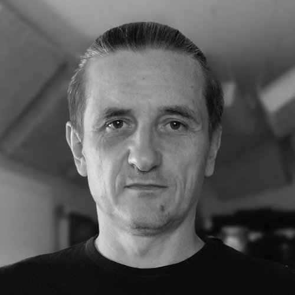

Composer · Producer · Arranger — Warsaw
Composer working between chamber music, free improvisation, and field recording.
Partly tonal, partly atonal string trios and quartets. Modal piano. Live drum kit and cymbal textures. Field recordings of crowds, halls, factories and birdsong assembled into the score itself. Warm Moog or viola surfacing through the texture. Slow rock chords with deep rhythm sections when a piece needs them. Reference points: Bill Laswell, John Zorn's Filmworks and Bar Kokhba projects, Oliver Coates, Supersilent, David Sylvian's Blemish / Manafon collaborators, Marc Ribot's Ceramic Dog, and the experimental wing of ECM.
Whatever Lovely Is (2026) — out 1 October, under the band name Weston Popławski Knade Mazzoll. With G. Calvin Weston (drums — Ornette Coleman's Prime Time, Bill Laswell, James Blood Ulmer), Jerzy Mazzoll (clarinet, bass clarinet) and Waldemar Knade (viola, organ). I arranged and produced the record, and play electric and fretless bass, violin, keys and programming.
Radio premiere — "Anna's Rope" on Utility Fog, FBi Radio Sydney, 20 September 2026.
The Way (Instrumentals) (July 2026) — digital. Instrumental edition of The Way. Chamber strings, keys and programming, bass, guitar, drums, composed space.
The Way (2025) — LP, vinyl. Solo: written, played, produced and mixed. Chamber writing, free improvisation, composed space, voice.
Tribute to Polish Sonorism (2020) — composer grant from the Polish Ministry of Culture (MKiDN). Three electronic pieces built on sampled voices of Penderecki, Kilar and Lutosławski — a conceptual gesture toward the Polish avant-garde tradition rather than a continuation of its compositional language.
Wentylator (2020) — self-released, thirteen pieces. First solo album; early version of the chamber writing + improvisation + field-recording approach.
I write music for film, documentary, dance, theatre and installation. Chamber strings, modal piano, field recording, free-improv tones, electronics. Contributed one composition, bass, additional instruments and mixing to Wojciech Smarzowski's Wesele (2004) — soundtrack composed by Tymon Tymański & The Transistors (Polish Academy Award for Best Original Music, 2005).
I produce records for artists whose music doesn't fit on one shelf — where a song can suddenly stop being a song, then become one again. If that's the record you want to make, we should talk.
Multi-instrumentalist — violin, electric and fretless bass, keys and programming, guitar. Formal violin training at PSM im. K. Lipińskiego, Lublin. Twenty years of recording and stage work across Polish independent music.
Active member of Polish art-rock band Amarok (amarok.pl). My compositional contributions to Amarok's Hope (2024) — Welcome (cold-wave), Queen (trip-hop), Stay Human and Hope Is — point to the same territory as my solo work. Bass and violin throughout. Violin on Michał Wojtas' Lore (2023). International live history with Amarok includes Night of the Prog (Loreley), Midsummer Prog (Netherlands), Crescendo (French Guiana) and Untold (Romania).
Send me your material. I'll listen and tell you honestly whether — and how — I can help.